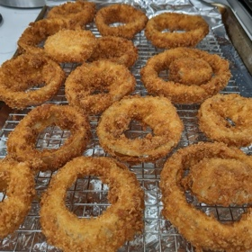

← All recipes
Onion Rings

Ingredients
- 2 large sweet onions, cut into 1/4 inch rounds, separated
- 2 cups panko bread crumbs
- 2 eggs
- 1 cup all-purpose flour
- 3/4 tsp baking powder
- 1/2 cup milk (I used leftover buttermilk)
- 1 tsp salt
- *Optional: 1 tsp garlic powder, 1/2 tsp black pepper, and a pinch of cayenne pepper
- Vegetable oil for frying
Directions
- 1. Heat the oil to 365 F.
- 2. Combine flour, baking powder, salt and other seasonings in a bowl.
- 3. Lightly dredge each onion ring in the flour mixture and set aside.
- 4. Beat the eggs with the milk and add the remaining flour mixture. Combine well until there are no lumps in the mixture. (This will be your wet batter.)
- 5. Dip the onion rings into the wet batter and shake off the excess. Then dip the onion rings into the panko bread crumbs. (Make sure you coat the onion rings well!)
- 6. Deep fry the onion rings for 2-3 minutes, flipping halfway or as they turn golden brown.
- 7. Drain the excess oil on a wire rack. Season with more salt, if necessary.
- 8. Eat. :)